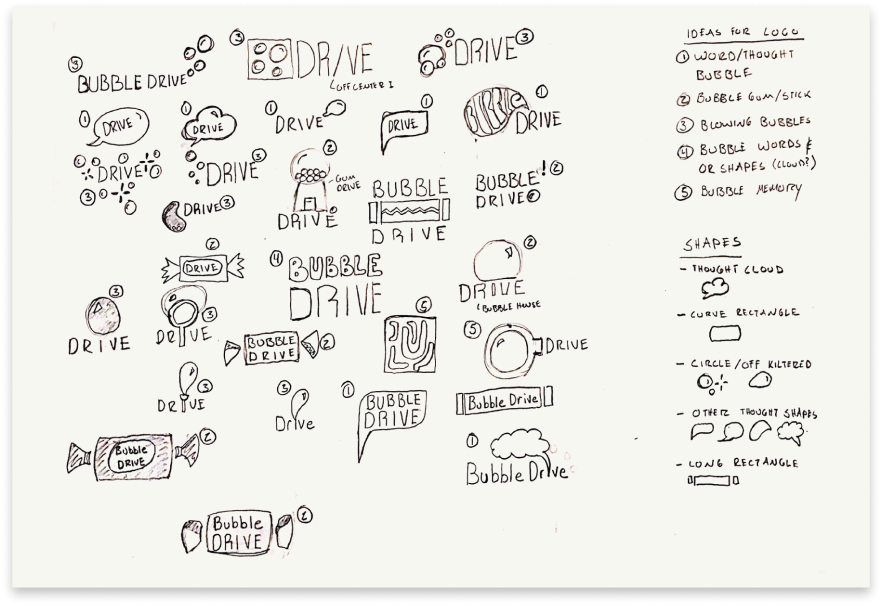
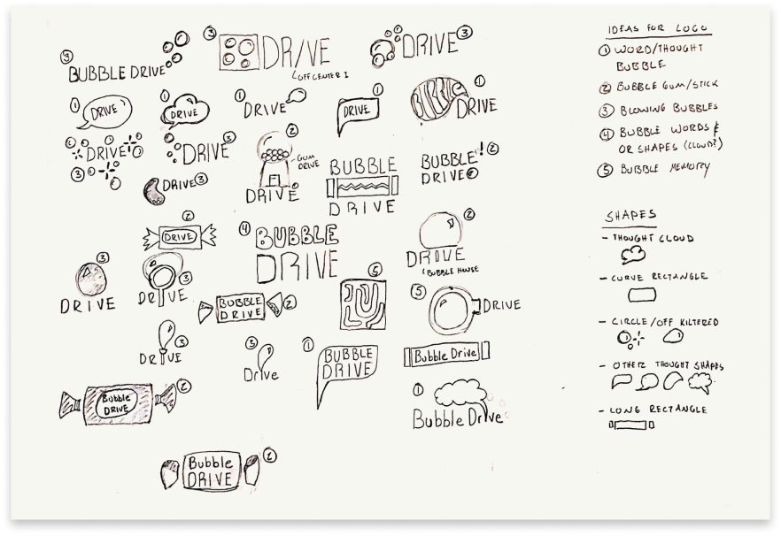
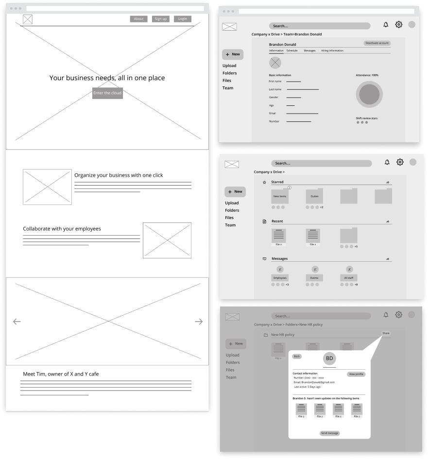
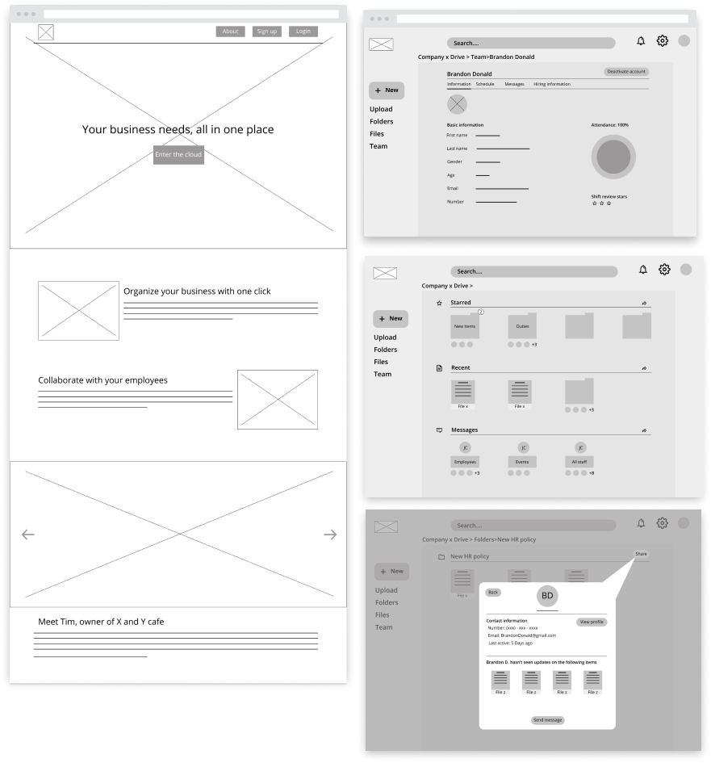

I was approached by a company seeking to move into the cloud storage market. My role was to identity an opportunity using research, then using design techniques, bring the product to life. I conducted market research, user surveys, and a variety of user testing throughout the process. In addition to that, I designed the products brand, logo, and webpage using UX design tools including Figma, inVision, and Adobe Illustrator.
The client wanted me to explore a potential niche for a cloud storage solution that could leverage their business’s core strengths. Their project brief outlined some key features and attributes they liked from their experience with similar cloud storage application.
Using extensive research in the field and user tested theories, I was able to locate a market niche within the cloud storage space and develop a cloud storage application with features and processes to enables small businesses to thrive.


 



 
